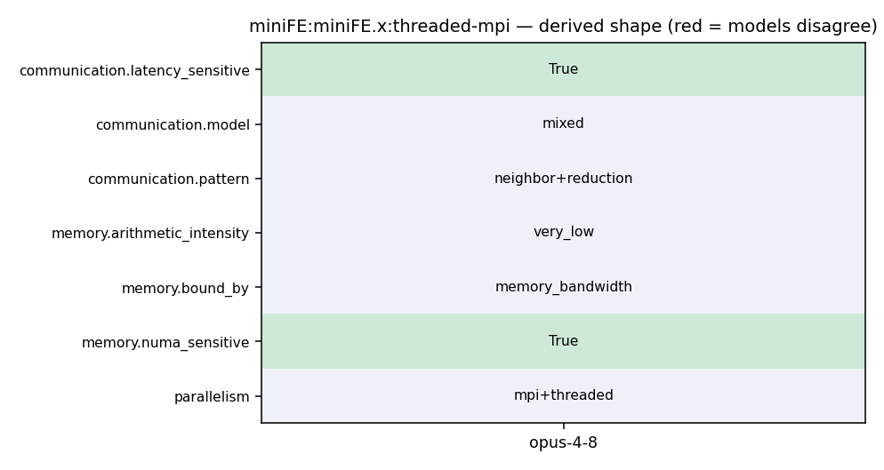

This run is unpinned (no commit recorded), so the snippets below come from the current default branch and their line numbers may no longer match what the model actually read.
shape at a glance

us.anthropic.claude-opus-4-8 — what the model said
miniFE OpenMP+MPI hybrid CG solver
MPI+OpenMP hybrid: OpenMP threads parallelize the bandwidth-bound CSR CG kernels within a rank; MPI handles neighbor halo exchange + scalar allreduce. NUMA-sensitive thread placement for the streaming kernels.
openmp/src/Vector_functions.hpp (omp parallel for over CSR sparse matvec/axpy, streaming)
CG MFLOP/s FOM
README.FIRST:81-84
78 6. Figure of Merit for MiniFE
79 80 MiniFE will dump a YAML file at the end of execution. The FOM we are
81 most interested in is the MFLOP/s achieved for the CG solve but we have 82 some additional interest in the matrix-structure and FE-assembly times 83 reported at the top of the file. The CG MFLOP/s are algorithmic FLOP/s 84 and are constant over all runs of the same problem size. Users can see 85 the various kernel break downs for more information about where time is
86 spent in the main CG kernel.
87
1 #-----------------------------------------------------------------------
2 # This file compiles for OpenMP and MPI hybrid operations using the GNU 3 # compile chain.
4 5 MINIFE_TYPES = \